382万回
382万回
激しく戦う犬と猫を『スローで撮ってみた』結果…382万再生された『まさかの光景』に爆笑する人が続出「気合いは感じるｗ」「顔でバトルｗ」
ライブドアニュース · 05 Nov
382万回
ライブドアニュース · 05 Nov
Yahoo!ニュース · 05 Nov · @mamesuke3333 ♥174,817
 191万回
191万回
ねとらぼ · 05 Nov · @shoka_forestry ♥69,918
 182万回
182万回
Excite エキサイト · 05 Nov
 100万回
100万回
Excite エキサイト · 05 Nov · @aurora__fujii ♥1,317
 92万回
92万回
 52万回
52万回
千葉日報オンライン · 06 Nov · @fujikawaguchiko ♥5,691
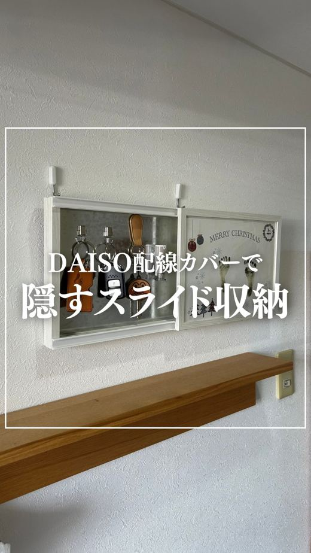
50万回 NEWねとらぼ · 06 Nov · @sui_clean ♥7,188
 42万回
42万回
ねとらぼ · 05 Nov · @mar1990_ ♥5,883
 42万回
42万回
ニコニコニュース · 05 Nov · @mar1990_ ♥5,883
 25万回
NEW
25万回
NEW
BANGER!!!（バンガー!!!）映画評論・情報サイト · 06 Nov · @spidermanmovie ♥236,331
au Webポータル · 06 Nov
au Webポータル · 06 Nov
Infoseek · 06 Nov
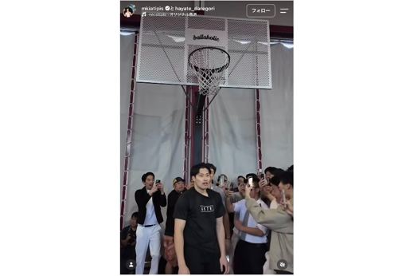
NEWYahoo!ニュース · 06 Nov
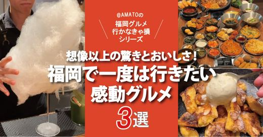
NEWフクリパ · 06 Nov
hicbc.com · 06 Nov
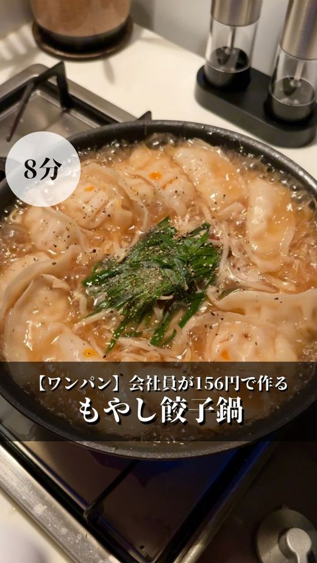
NEWヨムーノ · 06 Nov · @ryu.gohann ♥55,628
Yahoo!ニュース · 06 Nov
Yahoo!ニュース · 06 Nov
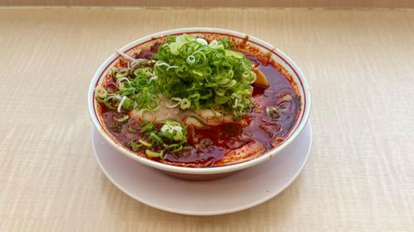
NEWYahoo!ニュース · 06 Nov
Yahoo!ニュース · 05 Nov · @yuririn_06 ♥2,333
BUBKA Web · 06 Nov
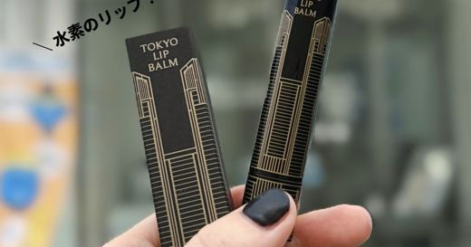
NEWMAQUIA · 06 Nov
 NEW
NEW
東洋経済オンライン · 06 Nov
BUBKA Web · 05 Nov
Dtimes · 05 Nov
 50万回
NEW
50万回
NEW
ねとらぼ · 06 Nov · @sui_clean ♥7,188
TRILL · 06 Nov
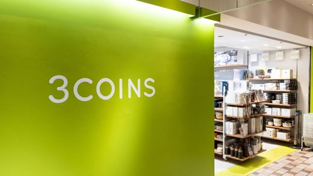
NEWAll About ニュース · 06 Nov
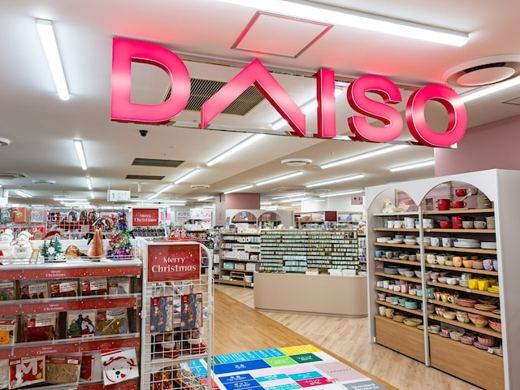
NEWｄメニューニュース · 06 Nov

ｄメニューニュース · 06 Nov
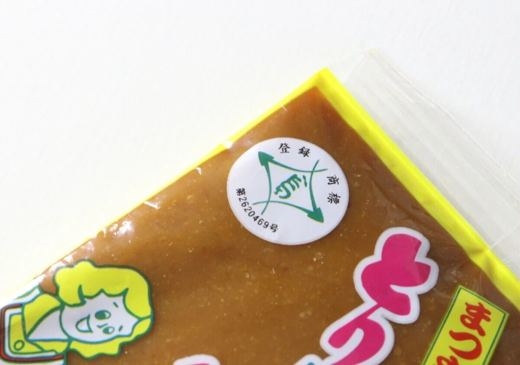
NEWTRILL · 06 Nov
DK BEVERAGE株式会社のプレスリリース 「DEVIL CHAMPAGNE」11月11日、日本初上陸 DK BEVERAG
共立女子大学・短期大学のプレスリリース 学生考案の共同開発商品「カフェ飯Kitchen」6品を11月9日より販売開始 共立女子大
株式会社トライアルホールディングスのプレスリリース 食と栄養の知見を活かした産学連携を強化、学生考案の共同開発商品を11月9日よ
株式会社マッシュホールディングスのプレスリリース 窪塚氏がこだわり抜いた王冠や目のモチーフを、厳選したアパレルアイテムや雑貨に掛
株式会社NSグループのプレスリリース 作中の個性豊かなキャラクターたちをイメージしたフード、ドリンクなどが楽しめるほか、描き下ろ
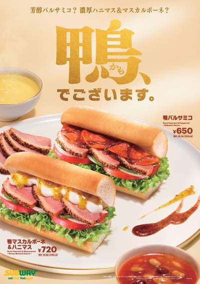
11/06 11:00 🗼 東京ワタミ株式会社のプレスリリース 〜12月28日(月)発売の2027年福袋の情報解禁も〜 WATAMI FAST CASUAL
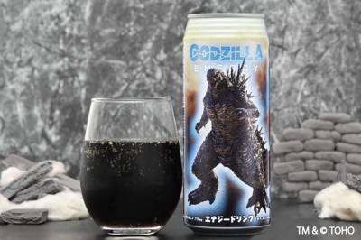
11/06 10:00 🗼 東京株式会社チェリオコーポレーションのプレスリリース 『もう、無（ゼロ）には戻れない。』クエン酸とBCAA配合、アルギニンさらに増！
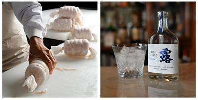
11/06 10:00 🗼 鎌倉株式会社鎌倉ハム富岡商会のプレスリリース コラボレーションセットを11月24日(火)より発売 報道関係者各位 2026年11月6
 11/06 07:50
🗼 神奈川
11/06 07:50
🗼 神奈川
株式会社はなまるフードサービスのプレスリリース 関係者各位 2026年11月6日 株式会社はなまるフードサービス 神奈川の農商工
 11/06 07:10
🗼 東京
11/06 07:10
🗼 東京
株式会社マイクロマガジン社のプレスリリース 美味しそうな100種類の「おやつ」に思わずお腹が鳴ってしまう！ 親子で何度も繰り返し
根元 八幡屋礒五郎らしい豊かな風味に、岩下の新生姜パウダーの爽やかな香りとキレのある辛みが調和 「岩下の新生姜七味」11月6日発
株式会社コラントのプレスリリース TVアニメ『呪術廻戦』第3 期「死滅回游」の世界観と魅⼒がたっぷり詰まった、特製おせちセットが
グレイス株式会社のプレスリリース 11月9日（月）より5周年記念キャンペーンを開催。台湾モチーフのガチャ企画や、新作「タピオカミ
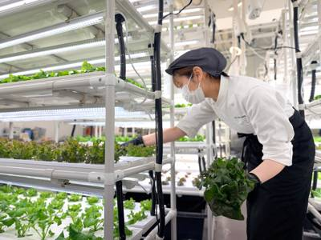
11/06 16:53 🚄 福岡グリーン・グリーン株式会社のプレスリリース グリーン・グリーン株式会社が創立20周年。家庭用水耕栽培グッズ販売から始まり、栽培シ
株式会社deltaのプレスリリース 〜もんじゃ焼き店として初めて(※)全席に無煙ロースターを備えた新ブランド「月島もんじゃ しち
株式会社ニチレイのプレスリリース 株式会社ニチレイ（本社：東京都中央区、代表取締役社長(CEO)：嶋本和訓）は、本年12月28日
アサヒビール株式会社のプレスリリース 1缶あたり15gの本物の果肉が入った桃フレーバーの“贅沢フルーツサワー” アサヒビール株
三菱商事ライフサイエンス株式会社のプレスリリース 三菱商事ライフサイエンス株式会社（本社：東京都千代田区、代表取締役社長：清水
ハウス食品グループ本社株式会社のプレスリリース 最大2時間待ちの行列が絶えない人気店「博多もつ鍋 前田屋」のもつ鍋（みそ味）の味
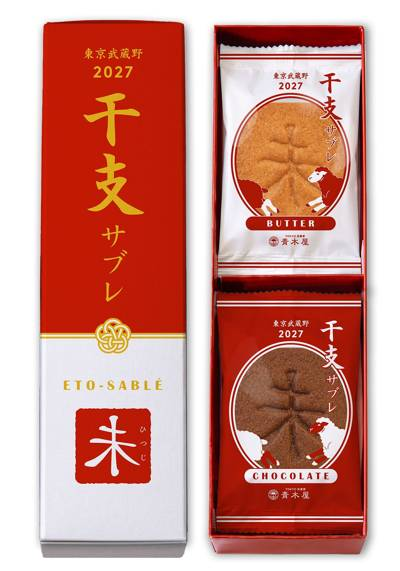
11/06 13:00 ❓ 不明2027年は未年。あえて「未」を反転させた、青木屋の縁起菓子が登場 老舗菓子店 株式会社青木屋(本社：東京都府中市、代表取締役：
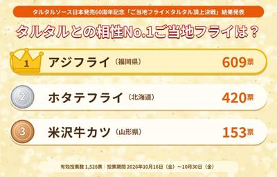
11/06 13:00 🌐 全国タルタルソース60周年記念委員会のプレスリリース ―タルタルソース日本発売60周年記念「ご当地フライ×タルタル頂上決戦」結果発表
株式会社湖池屋のプレスリリース なにが当たるかは、くじを引いてのお楽しみ…！ 株式会社湖池屋（社長：佐藤章）は、廣川株式会社（社
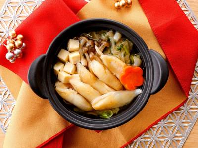
11/06 12:30 ❓ 不明ナッシュ株式会社のプレスリリース 〜飽きずに・美味しく・楽しく健康的な食事を習慣化。新商品も続々と登場〜 当社は「毎日の生活を“
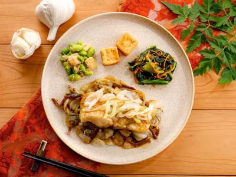
11/06 12:28 🚄 兵庫ナッシュ株式会社のプレスリリース 〜飽きずに・美味しく・楽しく健康的な食事を習慣化。新商品も続々と登場〜 当社は「毎日の生活を“
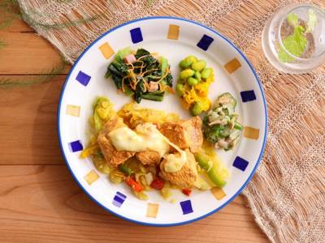
11/06 12:26 🚄 兵庫ナッシュ株式会社のプレスリリース 〜飽きずに・美味しく・楽しく健康的な食事を習慣化。新商品も続々と登場〜 当社は「毎日の生活を“
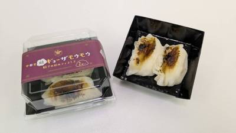
11/06 11:30 🚄 宇都宮株式会社葵乃庄のプレスリリース 株式会社葵乃庄(所在地：栃木県日光市)が運営する、JR宇都宮駅構内の那須ジャージー牛乳スイーツの
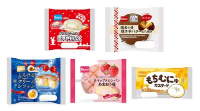
11/06 11:22 ❓ 不明敷島製パン株式会社のプレスリリース Pasco11月の新商品 売上数量ベスト5（集計期間：2026年11月1日〜2026年11月
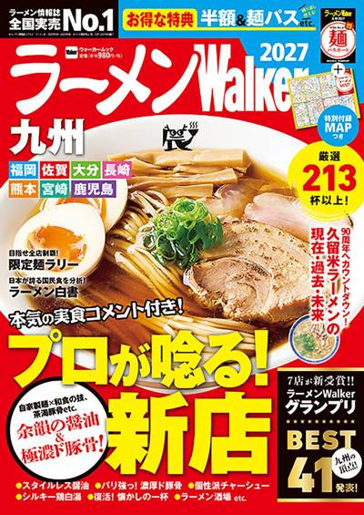
11/06 11:20 🚄 久留米株式会社角川アスキー総合研究所のプレスリリース 九州で広がる醤油と進化する濃厚豚骨 注目の新店28店を実食調査、九州7県の厳選2
株式会社味とサイエンスのプレスリリース カフェインを控えている方にも、ティータイムを楽しんでいただきたい。ポップアップストアで伺
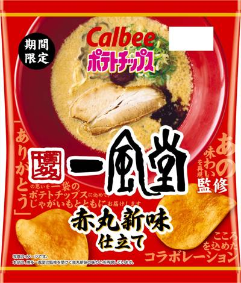
11/06 11:00 🚄 北海道カルビー株式会社のプレスリリース 2026年11月16日（月）より全国のコンビニエンスストアで期間限定発売 カルビー株式会社(本
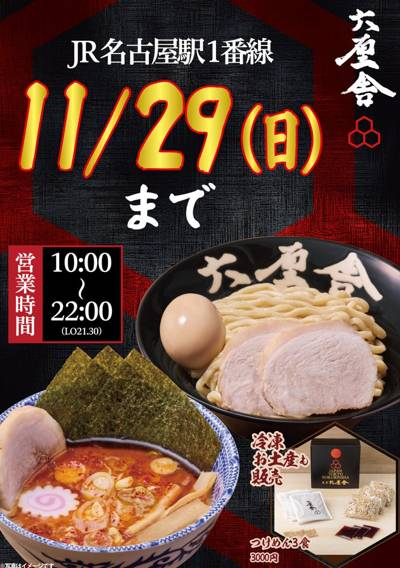
11/06 11:00 🚄 名古屋株式会社松富士食品のプレスリリース ～ご愛顧に感謝を込めて「生七味お試し券」をプレゼント。最後の一杯まで、心を込めてお届けします
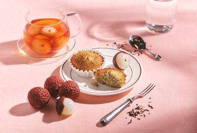
11/06 11:00 🚄 大宮株式会社BAKEのプレスリリース 〈第一弾〉ブランド新カテゴリ「フィナンシェ｛ライチティー｝」〈第二弾〉「ティードロップケーキ｛
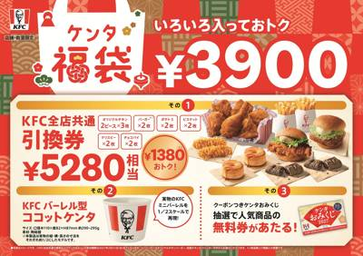
11/06 11:00 ❓ 不明日本ケンタッキー・フライド・チキン株式会社のプレスリリース ～抽選で人気商品の無料券が当たる“おみくじ”も付いてくる～ 日本ケ
赤城乳業株式会社のプレスリリース 2026年11月10日（火）より全国発売 赤城乳業株式会社（本社：埼玉県深谷市、社長：井上創
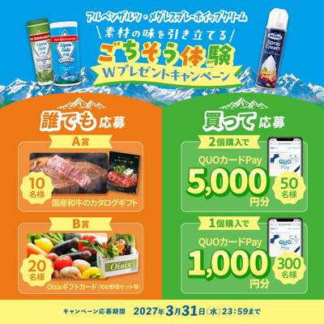
11/06 11:00 ❓ 不明SKWイーストアジア株式会社のプレスリリース アンケートに回答するだけで応募できる【誰でも応募】コースと対象商品を購入して応募で
プロテオグリカン素材事務局のプレスリリース プロテオグリカン素材事務局は、森永乳業株式会社(本社：東京都港区、代表取締役社長 C
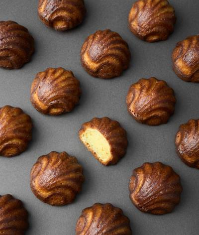
11/06 10:10 🚄 兵庫株式会社キャセリンハウスのプレスリリース ～2026年11月13日（金）～11月23日（月・祝）まで期間限定販売～ アールグレイ
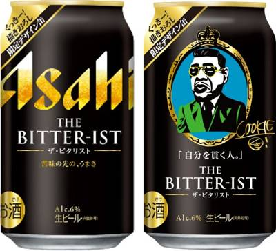
11/06 10:10 ❓ 不明アサヒビール株式会社のプレスリリース 「くっきー！描きおろし限定デザイン缶」を11月10日から数量限定発売 アサヒビール株式会
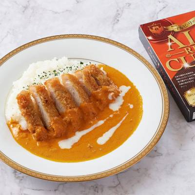
11/06 10:00 🚄 新潟株式会社NSGホールディングスのプレスリリース 選手有志「アルビカレー部」と生まれた一品が、記念カレー皿の抽選プレゼントとともに
Tregion株式会社のプレスリリース 1.リード文 Tregion株式会社（本社：岩手県盛岡市、代表取締役：吉田 慶）が運営す
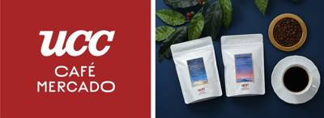
11/06 10:00 🚄 兵庫コーヒースタイルユーシーシー株式会社のプレスリリース 11月13日より、全国の「UCCカフェメルカード」など18店舗で数量限定販
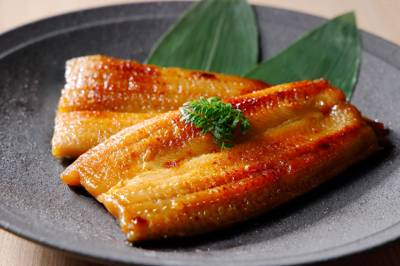
11/06 10:00 🚄 京都株式会社 京都一の傳のプレスリリース The Tabelog Award 10年連続受賞の友栄と、1927年創業の京都一の傳が共
株式会社河京のプレスリリース オリジナルラーメンどんぶり付き！ご自宅で、『ラーメン赤猫』の世界をお楽しみください 喜多方ラーメン
株式会社門崎のプレスリリース アニメ『刃牙道』Netflix配信＆地上波放送記念 1,450台限定。「範馬刃牙 球体ハンバーグ焼
株式会社資さんのプレスリリース ―資さんうどん公式ストアー50年間の温かいご支援に感謝をこめて＜第２弾！50周年記念 大感謝祭フ
日本ピザハット株式会社のプレスリリース 〜2026年11月8日（日）〜10日（火）の3日間限定！サイドメニューには「とろたま ご
株式会社D.Hのプレスリリース 100種類以上の具材から選ぶ麻辣湯専門店が六本木にOPEN！「10秒チャレンジ」ぴったりで無料券
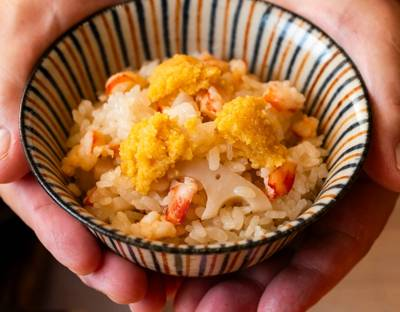
11/06 15:50 🚄 熊本株式会社 食文化のプレスリリース うまいもんドットコムの名店の味シリーズの料理人たちが、熊本の産品の魅力を伝えます 株式会社食文
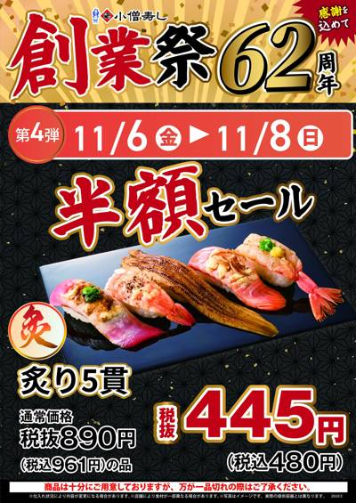
11/06 15:21 ❓ 不明KOZOホールディングス株式会社のプレスリリース 感謝を込めた創業祭第4弾！香ばしい炙り寿司を特別価格で。「くじ付き手巻キャンペ
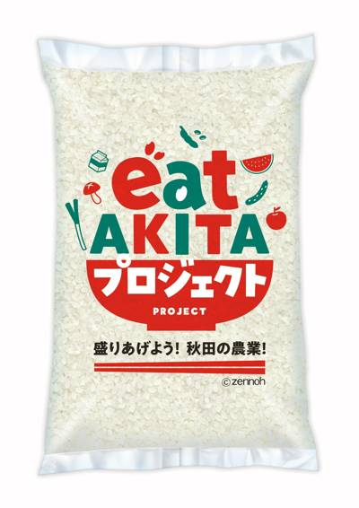
11/06 15:00 🌐 全国JA全農の産直通販JAタウンのプレスリリース ～「国消国産キャンペーン」で「お客様送料負担なし」！～ ＪＡ全農が運営する産地直
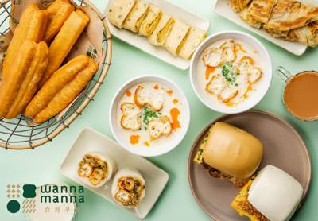
11/06 14:17 🚄 大阪グレイス株式会社のプレスリリース グランドオープンを記念し、台湾往復航空券が当たる抽選など豪華キャンペーンを2本立てで開催 大阪
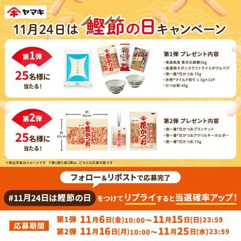
11/06 11:00 ❓ 不明ヤマキ株式会社のプレスリリース ～おかかご飯を楽しむセットやオリジナルグッズが当たる～ ヤマキ株式会社（本社：愛媛県伊予市 代
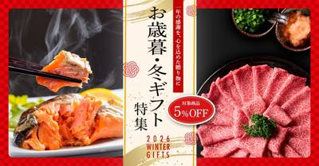
11/06 11:00 🌐 全国Core-Business株式会社のプレスリリース ブランド牛・毛ガニ・紅鮭・小田原/北海道の厳選干物など、全国各地のこだわりグ
株式会社すかいらーくホールディングスのプレスリリース 株式会社すかいらーくレストランツ（本社･東京都武蔵野市、代表取締役社長
株式会社ビーケー・ジャパンのプレスリリース 株式会社ビーケー・ジャパン（本社：東京都千代田区、代表取締役社長 兼 CEO：野村
井筒まい泉株式会社のプレスリリース 井筒まい泉株式会社（本社：東京都港区、代表：千 大輔）は2026年11月11日(水)より「ス
株式会社サガミホールディングスのプレスリリース ～日頃のご愛顧に感謝を込めて、特別価格商品やお得な割引券をご用意～ 和食麺処サ
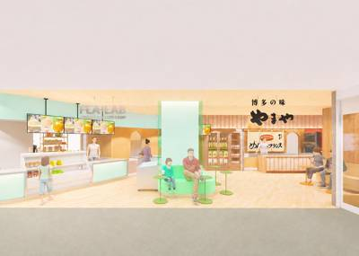
11/06 10:00 🚄 博多株式会社やまやコミュニケーションズのプレスリリース 株式会社やまやコミュニケーションズ (本社：福岡県糟屋郡篠栗町、代表取締役社
JA全農の産直通販JAタウンのプレスリリース ～「国消国産 お客様送料負担なしキャンペーン」で秋のおすすめ商品をお得に購入！～
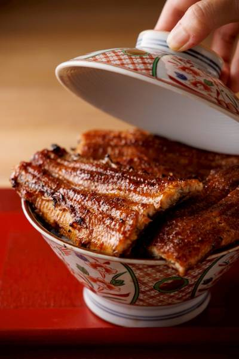
11/06 09:32 🚄 名古屋株式会社Ａｃｔ Ｃｏｍｍｕｎｉｔｙのプレスリリース 【オープン記念キャンペーン】公式アカウントをフォローすると500円オフ!!
株式会社ファイブグループのプレスリリース 11月9日〜23日限定｜燻製クイズや新しい食べ合わせに挑戦！参加者には燻製調味料などを
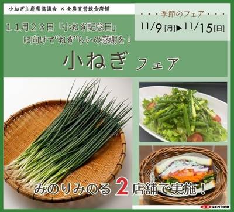
11/06 15:00 🗼 東京みのりみのるプロジェクトのプレスリリース ＪＡ全農は、東京都内の直営飲食店舗（２店舗）で１１月９日（月）～１１月１５日（日）の間
RX Japan合同会社のプレスリリース 観光・宿泊・飲食の未来を支える最新製品・サービスが集結 RX Japan合同会社（本社
アニヴェルセル株式会社のプレスリリース – 2026年11月27日(金)から2027年2月4日(木)までの期間限定
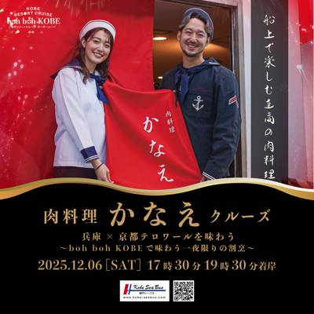
11/06 23:09 🚄 神戸早駒運輸株式会社のプレスリリース 開催日：2026年11月29日（日） 京都の名店を、神戸の海で味わう贅沢。神戸シーバス bo
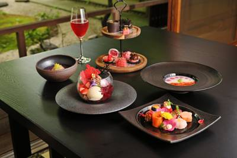
11/06 17:03 🚄 京都株式会社西武・プリンスホテルズワールドワイドのプレスリリース 洛北の澄んだ空気に包まれて、目にも艶やかな冬のアフタヌーンティーを
株式会社RUMBLE VENTURESのプレスリリース 本人描き下ろしのアートワークを施した限定ショッピングバッグ＆クッキーBO
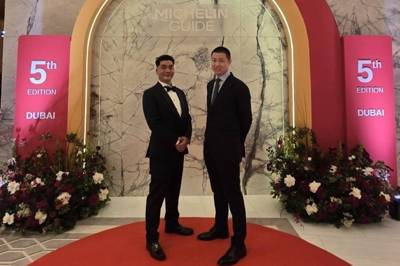
11/06 13:40 ❓ 不明TakaHisa Restaurantのプレスリリース 世界的美食アワードで高い評価を受ける「崇寿 TakaHisa」が手掛ける
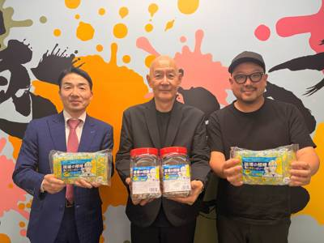
11/06 11:32 🚄 愛知株式会社ノダキのプレスリリース 経営者団体の歴代会長と現会長の信頼関係から実現。熱中症対策商品の新たな活用を通じ、働く人の健康と
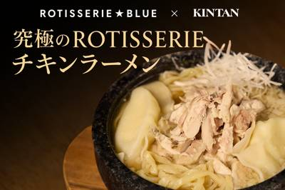
11/06 10:10 🚄 福岡株式会社 カルネヴァーレのプレスリリース 焼肉KINTANの和牛だし× ROTISSERIEのロティサリーチキンミシュラン一つ星
ライフスタイルカンパニー株式会社（所在地：東京都中央区）は、ホビーブランド「TOKOTOYZ（トコトイズ）」が展開するスクイーズ
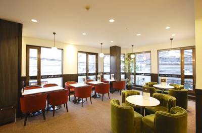
11/06 16:22 🗼 東京株式会社 銀座ルノアールのプレスリリース 株式会社銀座ルノアール（本社：東京都中野区・代表取締役社長：岡崎 裕成）は 「喫茶室ル
綿半ホールディングス株式会社のプレスリリース 綿半トレーディング株式会社（東京都新宿区、代表取締役社長：有賀 博）株式会社カサ
株式会社CLASSICのプレスリリース 11月28日までの期間限定。1点のご注文につき100円を「令和8年熊本地震義援金」へ寄付
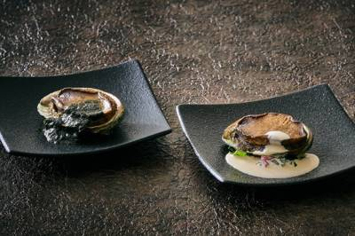
11/06 15:00 🗼 品川株式会社西武・プリンスホテルズワールドワイドのプレスリリース 【期 間】2026年11月11日(水)～11月30日(月) FUN
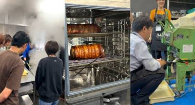
11/06 13:48 🗼 東京株式会社テンポスホールディングスのプレスリリース 大阪会場（11/12開催）は残りわずか、申込みは11/11まで。東京会場（11
 11/06 12:00
🗼 横浜
11/06 12:00
🗼 横浜
株式会社57のプレスリリース 2020年10月に東京で開業、現在は関東（東京・神奈川・埼玉・群馬・栃木）、東北（宮城）、関西（大
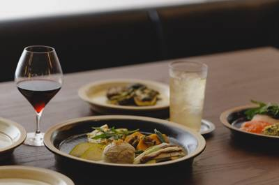
11/06 12:00 🗼 渋谷株式会社スープストックトーキョーのプレスリリース 株式会社スープストックトーキョー（本社所在地：東京都目黒区、取締役社長：工藤萌
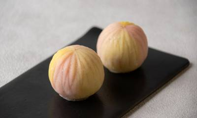
11/06 11:47 🗼 東京株式会社富澤商店のプレスリリース ～ギフト菓子部門で3年連続入賞、和と洋の素材を融合させた独創的な作品「秋毬～syuku～」で栄
株式会社GOODNEWSのプレスリリース ～週末だけ出会える。名店「Equal」の特製チーズケーキ。金土日数量限定販売～ バター
株式会社西武・プリンスホテルズワールドワイドのプレスリリース 【販売日】2026年11月7日（土） FUNな体験を創造する品川プ
株式会社ONPA JAPANのプレスリリース 小児がんと向き合う子どもたちとご家族を支えるために。協賛というかたちで、医療と支援
株式会社物語コーポレーションのプレスリリース 株式会社物語コーポレーション(本社:愛知県豊橋市/代表取締役社長:加藤 央之)が展
カフェ・カンパニー株式会社のプレスリリース 「アットホームな食堂居酒屋」というコンセプトのもと、自宅のようにくつろげる縁側の設置
 11/06 02:39
🗼 品川
11/06 02:39
🗼 品川
株式会社ファクトセンスのプレスリリース 新たなシェフが参画。西麻布で培った料理の技術とデジタル技術で、子どもも大人もくつろげる日
株式会社かに道楽のプレスリリース 待ちに待った海の恵みがついに解禁！旬を迎える至高の「松葉かに」を提供開始！ 澄み渡る冬の海から
株式会社ケイシイシイのプレスリリース 日常のひとときに、小樽から届く豊かな味わいを。看板商品「ドゥーブルフロマージュ」のとろける
ワールドインワーカー株式会社のプレスリリース ～特定技能1号から2号へのキャリアアップを支援～ 外食分野の特定技能外国人の紹介・
株式会社おもちゃ箱のプレスリリース 年に2回の特別セール！「omochabakoファミリーセール」を12月4日（金）・5日（土）
神奈川県のプレスリリース 県では、「かながわブランド」等の県産農水産物及びその加工品について、ECサイトを活用した販路拡大の支援
株式会社新朝プレスのプレスリリース 〜紋別市と連携し、“紋別との最初の出会い”を一箱に込めたアソート型返礼品を共創〜 株式会社新
株式会社 大丸松坂屋百貨店のプレスリリース 日時：2026年11月14日(土)～24日(火) 場所：本館地下1階、地下2階、各階
株式会社PLANTのプレスリリース 株式会社ＰＬＡＮＴ（本社：福井県坂井市 代表取締役社長：三ッ田泰二）は、ＳＵＰＥＲ ＣＥＮＴ
ベースフード株式会社のプレスリリース 完全栄養※1の主食等を開発・販売するベースフード株式会社（本社：東京都港区、代表取締役：橋
株式会社サイバーレコードのプレスリリース 株式会社サイバーレコード（本社：熊本県熊本市、代表取締役：増田一哉、以下「サイバーレコ
株式会社こじまのプレスリリース 3つの価格帯から選べる焼肉宴会。羽釜ごはんもおかわり自由、営業中の離れ各店で提供 株式会社こじま
ダイドードリンコ株式会社のプレスリリース ダイドーグループホールディングス株式会社（本社：大阪市北区、代表取締役社長：髙松 富
みのりみのるプロジェクトのプレスリリース ＪＡ全農は、福岡県内の直営飲食店舗「みのりカフェアミュプラザ博多店」「みのりカフェ福
レモン狩りと歴史遺産見学とロケ地巡り 株式会社ファーマシーガーデン(本社：神奈川県横須賀市西浦賀6-10、代表取締役：武藤 明)
カゴメ株式会社のプレスリリース ～日常的な食事条件においても、同量の糖質を含む糖液と比較して食後早期の上昇が小さい可能性～ カゴ
株式会社ニジゲンノモリのプレスリリース 淡路島アニメパーク「ニジゲンノモリ」内に位置するラグジュアリーヴィラ「GRAND CHA
カッパ・クリエイト株式会社のプレスリリース さらに特別クーポン入り！１２月２６日（土）より全国のかっぱ寿司にて順次お受け取り開始
PH PARIS JAPON 株式会社のプレスリリース このたび、ピエール・エルメ・パリは、新たに「ピエール・エルメ・パリ 札幌
アイコニア・ホスピタリティ株式会社のプレスリリース ホテルマイステイズ札幌駅北口（所在地：北海道札幌市北区、支配人：武田泰範）
成田国際空港株式会社のプレスリリース ※キッチンカー等の催事店舗は他施設で出店実績あり 2026年11月20日（金）、成田空港
株式会社ナックのプレスリリース 株式会社ナック（本社：東京都新宿区、代表取締役社長：川上 裕也）は、この度、当社が展開する安心・
株式会社エムニのプレスリリース 〜正解の定義もアノテーションも不要。デモでは熟練者のカットのコツを言葉に置き換えることを確認〜
株式会社物語コーポレーションのプレスリリース 株式会社物語コーポレーション(本社:愛知県豊橋市/代表取締役社長:加藤 央之)が運
株式会社コズミックホールディングスのプレスリリース 「大月町連携協定店」として、高知県大月町と公式に連携協定。直送の新鮮な海産物
中日本エクシス株式会社のプレスリリース ～各地の銘菓・名産品を、海老名で楽しめます～ 中日本エクシス株式会社 南関東支店（神奈
株式会社バイカルのプレスリリース 今年は国産の甘夏柑といちじく、ナッツを使用し、より美味しくリニューアルしました。 1955年に
東急ホテルズ＆リゾーツ株式会社のプレスリリース 神戸三宮東急REIホテル（兵庫県神戸市中央区 総支配人：平賀大介）では、2026
株式会社ホテル金沢のプレスリリース トリュフ舞う淡雪スープから、五郎島金時と和牛ステーキの共演まで 四季折々の素材にこだわった料
Ｇｉｎｇｅｒ Ｌａｂ株式会社のプレスリリース こども食堂の84.7％が物価上昇の影響を実感。企業の防災備蓄を活用し、大学生による
ロイヤルホールディングス株式会社のプレスリリース ～冬限定メニューを11月12日（木）より販売開始～ ロイヤルグループが展開す
株式会社FoundingBaseのプレスリリース 隠岐・海士町が誇るブランド岩牡蠣「春香」や獲れたての旬魚を贅沢に味わう夕食付き
けやきひろばクリスマスマーケット実行委員会(株式会社さいたまアリーナ代表取締役社長 三上 浩嗣)は、「けやきひろば クリスマスマ
大台町のプレスリリース ■ 本件の概要 大台町観光協会では、2026年6月1日から2027年1月31日までの期間、大台町を訪れた
株式会社ソトバコのプレスリリース 『使おうと思ったら期限が切れていた』をなくし、廃棄ロスを減らします。 株式会社ソトバコ（本社：
株式会社コラゾンのプレスリリース 麹を「知っている」から「毎日使える」へ。85日間で使いこなしをサポート 麹専門店MUROを運
ニッカホーム株式会社のプレスリリース 空調の効いた屋内で、家族や仲間と手ぶらBBQ。「美味しいお肉と語らう時間」をコンセプトに長
株式会社KISSUI GROUPのプレスリリース 「月島の活気と長野の大自然の融合」がテーマの月島もんじゃ たまとや長野が長野県
株式会社 五感ホールディングスのプレスリリース 旬の洋梨に、京都・宇治「上香園」の特上ほうじ茶をアクセントに 大阪・高麗橋を拠点
株式会社アトムのプレスリリース コロワイドグループの株式会社アトム（本社：神奈川県横浜市 代表取締役社長：植田剛史）が展開する回
株式会社ロイズコンフェクトのプレスリリース 株式会社ロイズコンフェクト（北海道札幌市）は、これまで京都府内・近郊のみで販売してい
ＪＲ九州ファーストフーズ株式会社のプレスリリース 「シナボン」が近鉄百貨店 四日市店へやってくる！2026年11月11日（水）か
株式会社スタジアムのプレスリリース 仲間と一緒に料理を楽しみながら、新しい挑戦をサポートするオンラインコミュニティ 株式会社スタ
生活クラブ事業連合生活協同組合連合会のプレスリリース 国産飼料中心・牛の健康を第一に考えて育てた牛肉をふだんの食卓に 生活クラブ
かどや製油株式会社のプレスリリース 創業168年。世界の食卓にごま油が並ぶようになるまでの、かどやのDNAを伝えるストーリーを、
～「学ぶ」から「伝える」へ。牛乳・乳製品バリューチェーン一貫学習プロジェクトの成果を実践～ 雪印メグミルク株式会社（本社：東京都
株式会社木曽路のプレスリリース ～高まる「昼の宴会需要」に応える！個室・送迎バス完備で幹事様も安心、昼から贅沢な忘年会～ 株式会
株式会社名古屋三越のプレスリリース 11月16日(月)にオープン 名古屋栄三越では、2026年11月16日(月)、地下1階に〈ア
株式会社ラスイートのプレスリリース ◆PDF版ダウンロードはこちら ホテル ラ・スイート神戸ハーバーランド（総支配人：檜山 和司
株式会社ゴンチャ ジャパンのプレスリリース 株式会社ゴンチャ ジャパン（本社：東京都港区、代表取締役社長：角田 淳、以下ゴンチ
株式会社エブリーのプレスリリース 物価高・時短・野菜嫌いなどの悩みに寄り添い、こども食堂の認知拡大と食卓の課題解決を目指す 株式
株式会社オークラ ニッコー ホテルマネジメントのプレスリリース きらめくツリーと華やかな美食で楽しむ、心ときめくクリスマス 大阪
株式会社moreのプレスリリース パスタ文化が根付く高崎で、全品スープ仕立てのパスタや赤城和牛を使用した料理を提供。個室完備、5
株式会社そごう・西武のプレスリリース 「鍋ギフト」年末年始の家族の集まりや、ご自宅での楽しみに約5１種類を展開 西武福井店では１
株式会社サガミホールディングスのプレスリリース 秋のひとときを彩るにふさわしい、和のデザートを楽しむ～おいしい“ね”があふれる時
株式会社ロイヤルホテルのプレスリリース 高級オルゴールの音色と京都の絶景に包まれるクリスマス リーガロイヤルホテル京都（京都市
株式会社ロイズコンフェクトのプレスリリース 北海道札幌市のチョコレートメーカー「株式会社ロイズコンフェクト」は、北陸・東海・近畿
アークランドサービスホールディングス株式会社のプレスリリース 海老天、舞茸、ししとうの天盛りとのど越しのよい本格そば「年越しそば
株式会社雨風太陽のプレスリリース 〜ポケマル内でのお米の購入量を可視化する特設ページを公開〜 株式会社雨風太陽（本社：岩手県花巻
株式会社エスワイフードのプレスリリース 「鳥男」の大型看板を初めて掲げた栄店の歴史に幕。 株式会社エスワイフード（本社：愛知県
株式会社ichiboku/The Sanatonのプレスリリース 香住港の仲買人が見極めたタグ付き活松葉ガニを全プランで提供 競
株式会社タカノフルーツパーラーのプレスリリース 株式会社タカノフルーツパーラー（代表取締役社長 髙野吉太郎、本社東京都新宿区）は
幸福ダイニング株式会社のプレスリリース 50種類以上の具材、4種類のスープ、麺までコミコミ100g438円。選ぶ楽しさを追求した
ワールドリカーインポーターズ株式会社のプレスリリース 横浜のクリスマスシーズンにひと足早く開幕。予約不要・入場待ちなしで、ファミ
株式会社おもちゃ箱のプレスリリース ヨーロッパの街角を旅するように、心ときめくクリスマスギフトや体験に出会うひととき。オーガニッ
株式会社農心ジャパンのプレスリリース 11月6日（金）からは「辛ラーメン×チーズセット」が当たるXキャンペーンも開始 株式会社農
ぴあ株式会社のプレスリリース 『パンのフェス2026 in うめきた公園』2026年12月11日（金）～13日（日）の3日間で開
ジェイ・ワークス株式会社のプレスリリース 伝統美が息づく京都から届ける、冬の特別な贈り物。ジンジャーブレッドやスパークリングロゼ
Plantful Journeyのプレスリリース ル・コルドン・ブルー・パリのプラントベース料理ディプロマ日本人初取得、ヴェルヌ
株式会社デリシャスフロム北海道のプレスリリース 割れない・飲み切り・常温保管。新作「ゆずスパークリングウォーター」も同時展開し、
株式会社八芳園のプレスリリース 開催期間中最後のメニュー変更で12月20日(日)の最終日まで提供予定。鏡石町の農家や学生、事業者
株式会社LSPのプレスリリース ～煙立ちのぼる「5品種セルフ炭火焼き」に、 前代未聞の「深谷ねぎボウリング」まで！“深谷ねぎまみ
株式会社パパスのプレスリリース 吉祥寺の街を巡る、秋のスペシャルコラボイベントを11月26日(木)より開催！～限定コラボグッズが
ビーテック株式会社が運営する「ノベルティのお菓子屋さん」は、クリスマスイベント向け「ノベルティのお菓子屋さん クリスマス特集ペー
ビーテック株式会社は、メッセージ入りお菓子＆ギフト専門のオンラインショップ「おうさまのおやつ」にて、「クリスマスお菓子特集202
DJI JAPAN 株式会社のプレスリリース 2026年11月6日、DJI Agricultureと株式会社セキドが共同主催する
亀岡市のプレスリリース 昨年度のコラボ動画から始まったご縁が現地へ。市長面会を経て、画面の向こうの美味しさを今度はリアルな会場で
株式会社ジェイアール東日本都市開発のプレスリリース ～東京女子大学の学生が企画・運営／杉並区の後援で産官学連携へ、学園祭「VER
株式会社菜花の里のプレスリリース 株式会社菜花の里が運営する「PERIE MARCHE & GOHAN」(千葉県千葉市)
株式会社 ファイアーキッズのプレスリリース 子どもの約9人に1人が貧困状態。音楽プロデューサー今井了介さんの活動に共感し、就任後
一般社団法人International Matcha Associationのプレスリリース 900名超・世界25カ国からの参加
伊良コーラのプレスリリース 〜湯上がりの新定番、イヨシコーラのエキスを使用したスパイスや柑橘の香りを楽しめる変わり湯が全国の温浴
カリフォルニアプルーン協会のプレスリリース 11月7日・8日、下北沢BONUS TRACKで試食サンプルを配布、プルーン使用スイ
株式会社AlgaleXのプレスリリース 100店舗超の小売で展開する「うま藻」の実践から、スタートアップと小売が組む意味を語りま
株式会社favyのプレスリリース 株式会社favy（東京都新宿区・代表取締役社長 髙梨巧）は、シェア型フードホールの入居店舗向け
株式会社カプコンのプレスリリース 【カプコン直営店舗関連情報】 株式会社カプコンが運営するアミューズメント施設において、カバー株
株式会社SEA STORYのプレスリリース 忘年会・新年会の実施率57.2％。ご祈祷を受けた杵と「よいしょ！」で会場がひとつに。
協同組合日本製パン製菓機械工業会のプレスリリース 「人と食をつなぐ、次世代の技術」をテーマに、240社・1,551小間が集結。製
株式会社東奥日報社のプレスリリース むつ市・横浜町・大間町・東通村・風間浦村・佐井村自慢の逸品がずらり 株式会社東奥日報社は、
株式会社antiquaのプレスリリース 肉料理に特化したグルメイベント「わたわん にくFES 2026」にWHATAWONで開催
株式会社サン・フレッシュグループホールディングスのプレスリリース 秋田の食の魅力を関西へ！ 阪神梅田本店・近鉄上本町店で2026
株式会社コシダカのプレスリリース オープン当日は開店記念の餅つきイベントを開催！持ち込み自由でファミリーから学生まで1日遊べるエ
魚津市役所のプレスリリース 恒例のまるごと1杯紅ズワイガニが堪能できる「蒸し蟹」は過去最大級の300杯。予約分は完売！若干数、当
株式会社中村衞商事のプレスリリース 京都の料理人にも愛される礼文島産天然利尻昆布と、鮮度が命の甘海老・ボタンエビ。不漁が続く今だ
株式会社東筑軒のプレスリリース 来店者全員に、3週続くお楽しみクーポンをプレゼント 1921年（大正10年）創業、北九州・折尾駅
四天王寺大学(学長：須原 祥二、所在地：大阪府羽曳野市学園前三丁目2番1号)は令和8年11月14日(土)、藤井寺駅周辺の3商店街
株式会社エスエルディーのプレスリリース 大阪・なんばパークスミュージアムで開催される『ヘタリア20周年原画展 WorldFest
株式会社うかいのプレスリリース コラボレーション企画として横浜うかい亭で特別コースを期間限定提供「四季のめぐり ―秋の森の妖精た
株式会社 博多ステーションビルのプレスリリース 博多駅ナカ・マイングに京都の名店１４社が集結！ 長年地元で愛される魅力をお届けし
株式会社ホテル京阪のプレスリリース ～Holiday Celebration Gourmet＆DIY Sweets～ ファミリー
一般社団法人埼玉県物産観光協会のプレスリリース （一社）埼玉県物産観光協会（会長：朝霧重治）は、2026年11月12日（木）～2
株式会社お亀堂のプレスリリース お亀堂×サミーのコラボあん巻き3種が登場。キャラクターの焼印と専用パッケージで楽しむ、カスタード
株式会社クラフトネクサスのプレスリリース クラフトビール、冬限定のホットドリンクとフード、TRIJYAとの限定コラボビール。多彩
株式会社クレ・ドゥ・レーブのプレスリリース 滋賀の食の魅力を活かした料理と、スポーツ領域で培ってきた経験によるVIPエリア体験を
株式会社ロイヤルホテルのプレスリリース ［開催日］2026年12月24日（木）・25日（金） リーガロイヤルホテル広島（広島市中
株式会社トリドールホールディングスのプレスリリース 景観保全活動「ビューティフルデー」への参加と町民向けうどん教室の開催を通じて
株式会社村の駅 道の駅伊豆のへそ、いちごBonBon 伊豆の国factoryのプレスリリース ～いちご8倍！？な特大パフェをはじ
ＹＵＤＡミルク株式会社のプレスリリース ＹＵＤＡミルク株式会社（本社：岩手県西和賀町）は、11月8日（日）・15日（日）の2日間
勝花藏株式会社のプレスリリース 日本酒・クラフトサケが集まる香港のイベントで、ブース売上・ボトル販売売上ともに1位。金賞受賞酒を
長岡市のプレスリリース 発酵のまち・長岡で、発酵文化と最先端のサイエンスを体験する1週間が始まります。 2026年11月9日（月
富山市のプレスリリース 富山市はANAグループとシティプロモーション連携協定を結び、様々な事業を通して富山市の魅力発信に取り組ん
voco大阪セントラルのプレスリリース 鳥かご型スタンドに広がる雪景色と、想い出の冬の物語。12月23日からはクリスマスディナー
株式会社NSGホールディングスのプレスリリース 明治38年創業の味噌蔵「峰村醸造」×地元人気ベーカリー「MOUNT TEN BR
ネッスー株式会社のプレスリリース 返礼品はそのまま、追加負担なしで物価高の影響を受けるこども食堂などを応援。寄付額に応じてお米な
株式会社京阪百貨店のプレスリリース 株式会社京阪百貨店（本社：大阪府守口市 取締役社長：畑中 利彦）は、守口店8階大催事場にて
株式会社 鶴屋吉信のプレスリリース 創業1803年の京菓子「鶴屋吉信」が220余年の歴史を育む京都・西陣にて、伝統工芸の魅力を身
株式会社さくらの杜のプレスリリース ～りんご盛り放題・りんごツミツミ・全長約35cmのなが～姫りんご飴など 石川町・福島県のりん
江崎グリコ株式会社のプレスリリース 「ちょっとした動き」の積み重ねと、腸内細菌の働きに注目 秋から冬にかけては、気温の低下で外
山口県長門市のプレスリリース 山口県長門市から、極上のケンサキイカをお届け。熟練の目利きが認めた「旬」の味わいが解禁されました。
一般社団法人リリースのプレスリリース 一般社団法人リリース（本社所在地：京都府京都市、共同代表：桜井肖典・風間美穂）が運営するS
シャディ株式会社のプレスリリース ～新たなギフトの可能性を探る、学生が販促企画から接客まで参画する実践型プロジェクトを実施～
ベースフード株式会社のプレスリリース 完全栄養※1の主食等を開発・販売するベースフード株式会社（本社：東京都港区、代表取締役：橋
株式会社オーイズミフーズのプレスリリース A5ランクの黒毛和牛ステーキを楽しむ10,000円プラン、最上級プライムビーフのフィレ
一般社団法人焼き餃子協会のプレスリリース 新ブランド「ちゃおずりさ」の点心師が店頭に立ち、特製餃子も登場 ── 11月20日〜2
公益財団法人佐賀県産業振興機構のプレスリリース 「日本一の牡蠣漁師と乾杯！」 佐賀が誇る２人の牡蠣漁師が、11月14、15日の２
KASUGAご当地グルメグランプリ実行委員会のプレスリリース あなたの1票で「春日No.1グルメ」が決まる3日間 NPO法人春日
株式会社スマイルズのプレスリリース 帯広・十勝の「やってみたい」を広く募集、公募〆切は12月25日（金）まで。 株式会社スマイル
『青の洞窟 SHIBUYA』実行委員会のプレスリリース 累計１，６５０万人以上※１が訪れた冬の風物詩 『青の洞窟 ＳＨＩＢＵＹ
株式会社湖池屋のプレスリリース 湖池屋ロゴが堂々と入った化粧まわしを贈呈 株式会社湖池屋（社長：佐藤章）は、11月から始まる大相
INSOUホールディングス株式会社のプレスリリース カフェとお酒が楽しめるパフェバー INSOUグループのINSOU Japan
株式会社健康家族のプレスリリース ～新企画「有機栽培にんにくクイズ」が登場。参加で1つ、正解でもう1つプレゼント～ 「本多荘輔の
株式会社クレ・ドゥ・レーブのプレスリリース 料理ごとにパンとの組み合わせを楽しむコースディナーと、7種のパンやスイーツブッフェを
マリンフーズ株式会社のプレスリリース 仕事をリアルに学ぶ体験プログラムに17名の学生が参加 マリンフーズ株式会社（以下、「マリ
 11/06 07:30
❓ 不明
11/06 07:30
❓ 不明
SRSホールディングス株式会社のプレスリリース ～天丼4品ALL590円！大好評のキャンペーンを11月も開催します♪～ 590円
有限会社北洋共同漁業部のプレスリリース 歴史的不漁の今こそ、鮭の魅力を伝えたい。“鮭離れ”を食い止めるため、知床の漁師たちが札幌
サンクトガーレン有限会社のプレスリリース 長野県伊那市の傷リンゴを活用したアップサイクルビール サンクトガーレン有限会社（神奈川
リードオフジャパン株式会社のプレスリリース 「ブランコ」「レポサド」「アニェホ」にくわえ、世界的バーテンディングチャンピオンとマ
長野県のプレスリリース 未発売の2025年ヴィンテージ4銘柄を特別お披露目＆数量限定で先行販売。芸術家でもある栽培家が、ブドウ畑
水口酒造株式会社のプレスリリース – 愛媛県内で唯一、吟醸酒・冷酒・燗酒の全部門で2年連続の受賞を達成 –
菊水酒造株式会社のプレスリリース 2026年11月12日(木)より出荷開始。オンラインショップでご予約受付中。 菊水酒造株式会社
オリオンビール株式会社のプレスリリース オリオンビール株式会社（本社：沖縄県豊見城市、代表取締役社長 兼 執行役員社長CEO 村
株式会社DREAMBEERのプレスリリース 株式会社DREAMBEER（本社：東京都港区 代表取締役：萩尾 陽平）は、全国各地の
カルビー株式会社のプレスリリース 2026年12月7日（月）から全国のコンビニエンスストア以外で期間限定発売 カルビー株式会社(
株式会社リカーマウンテンのプレスリリース 春、シャンパーニュ咲きほこる！約500アイテムのワインを心ゆくまで楽しむ1日。2026
株式会社信濃屋食品のプレスリリース 11月第3木曜日に解禁を迎えるボジョレー・ヌーヴォー。市場縮小の中でも信濃屋は「秋の収穫を祝
株式会社ビデオインフォメーションセンターのプレスリリース ～秋の夜長にウイスキーを堪能 吉祥寺を飲み歩き～ 株式会社ビデオインフ
株式会社西新宿ホテルアンドリゾートのプレスリリース 中国料理「翡翠宮」にて「ヘンケル・フレシネ メーカーズディナー」を12月11
株式会社ロイヤルマイルのプレスリリース 好評の3,500円・5,000円に、新たな7,700円のプレミアムプランを追加！席料・チ
日欧商事株式会社のプレスリリース ～ 6年連続・通算9度目となる「年間最優秀生産者」を受賞に華を添える ～ 日欧商事株式会社(本
SAKE COMPETITION 2026 泡盛部門 実行委員会のプレスリリース ユネスコ無形文化遺産登録から、新たなステージへ
株式会社 FS.shakeのプレスリリース 博多のもつ鍋と、お通しで食べ放題の名物おでんを楽しめる大衆酒場が金山に。3日間限定の
株式会社 FS.shakeのプレスリリース 博多のもつ鍋や名物おでんを気軽に楽しめる大衆酒場が大阪福島に。個室も完備し、3日間限
株式会社モンテローザのプレスリリース 2026年11月9日（月）と、11月16日（月）の2日間は、LINE・アプリ会員限定でキリ
株式会社コズミックホールディングスのプレスリリース 全66席、個室を中心とした落ち着いた空間で、友人との食事から最大40名の宴会
株式会社Qvouのプレスリリース "幻の地酒"「神泉」の東酒造と「霧島天然水 のむシリカ」至高のコラボレーシ
株式会社西武・プリンスホテルズワールドワイドのプレスリリース ライトアップされた日本庭園が最も美しい季節。秋の夜長をごゆっくりお
株式会社アップライジングのプレスリリース 超大吉は白州25年！白州12年・白州シングルモルトに加え、桜尾・イチローズモルト・マッ
株式会社 東急百貨店のプレスリリース ～活力ある個性豊かな地域社会の創造を目指す山梨県との包括連携協定に基づく、ワインの魅力を広
Not every angel can walk the VSFS runway, and that’s the whole trend. Creators are pairing this audio with the on-screen text “Not every angel can walk VSFS, some of us need to…” and finishing it with something way less glamorous (and way more relatable). It’s been all over our feeds since the show, and lowkey, we’re here for it.
“I just wanna make a lot of money and…” Now finish the sentence. Creators are setting Tate McRae’s “Housewife” over B-roll of their lifestyle, then revealing exactly how they’d spend the cash. It’s equal parts manifestation and mood board, and a great fit for lifestyle creators and brands selling an aspirational vibe.
音源: The Blue Danube Waltz – Royal Symphony Orchestra
Picture this: you’re in your PJs, doom-scrolling, and then, for absolutely no reason, you’re up and trying on a brand-new fit. This one’s giving fashion haul, but make it playful. Perfect for fashion and lifestyle creators (or brands) showing off their latest buys.